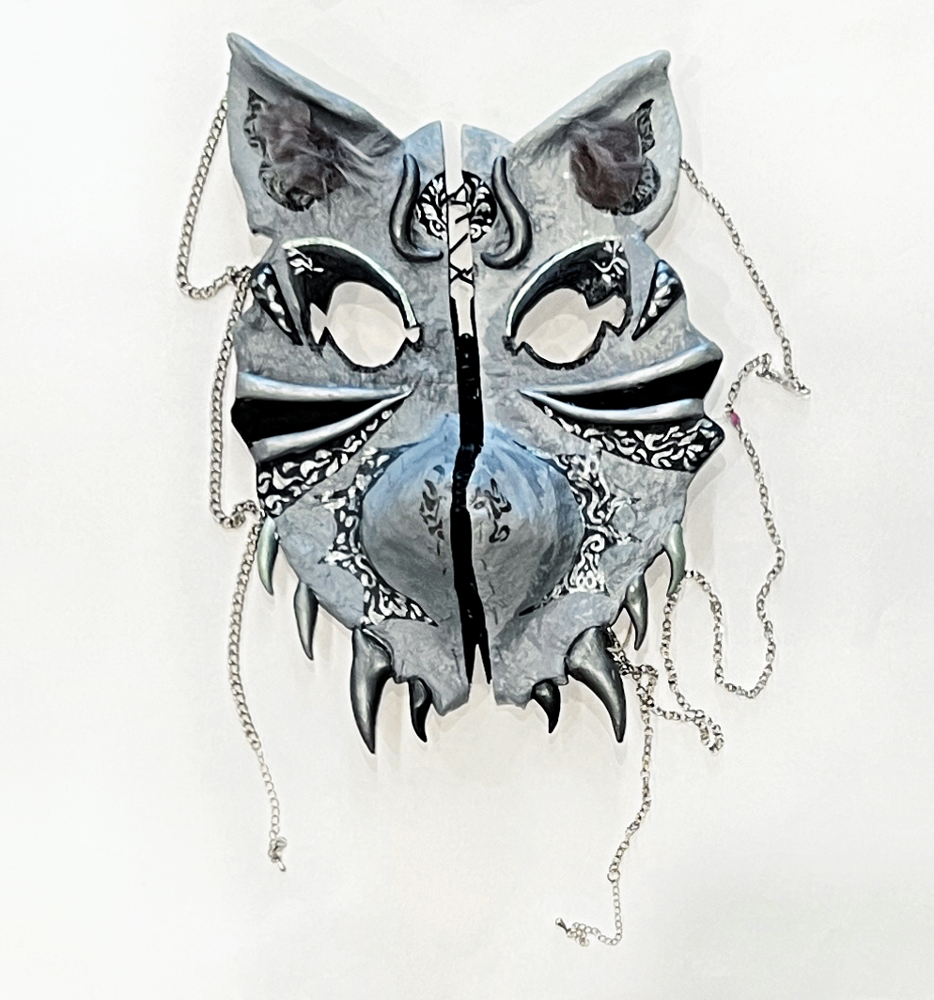
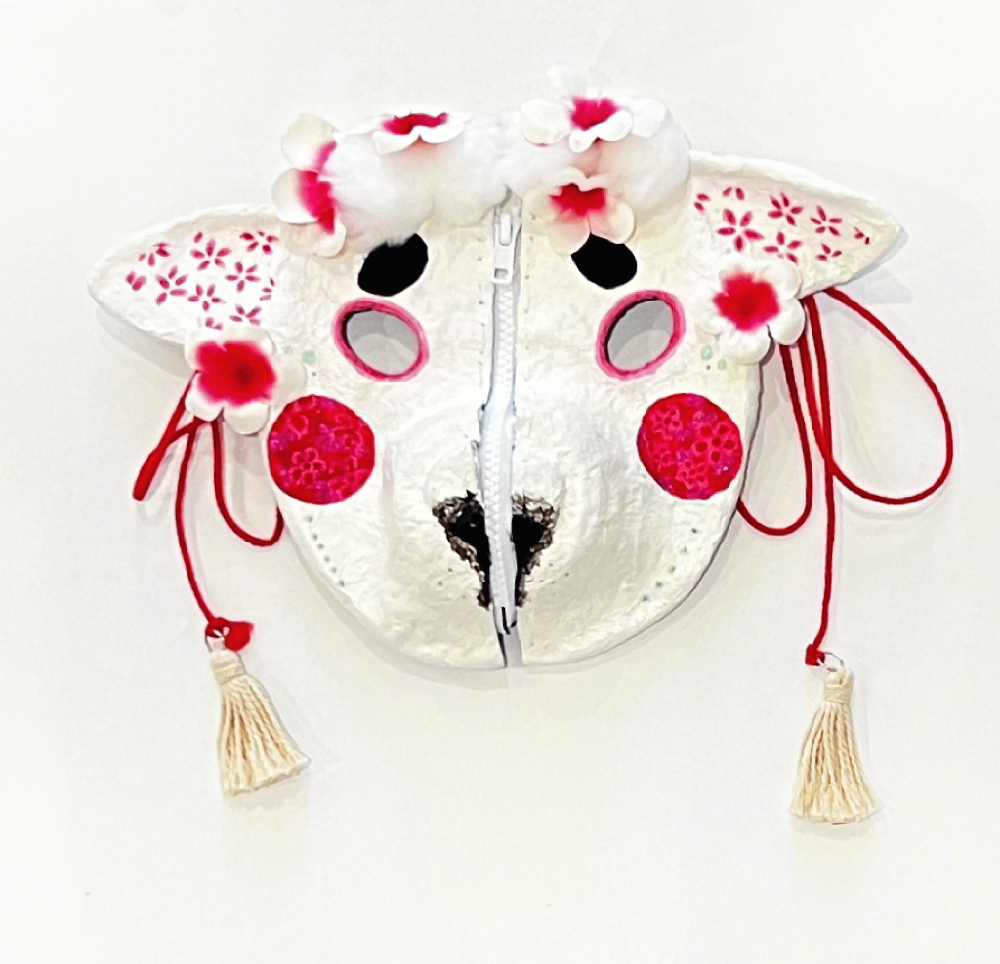
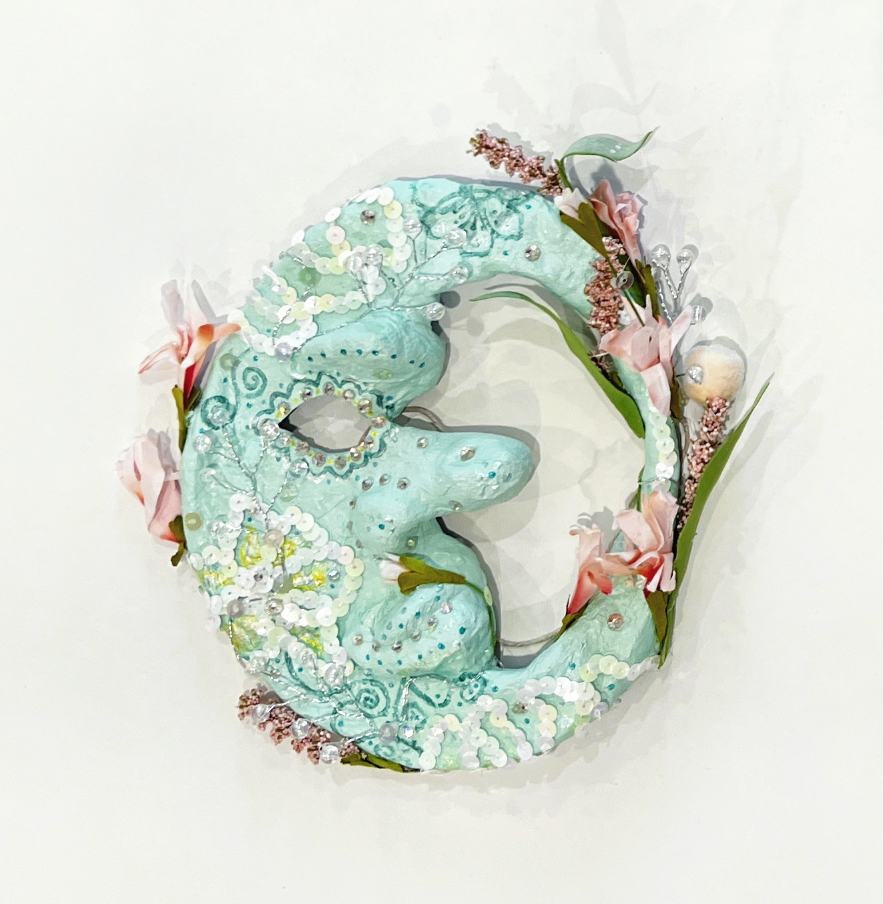
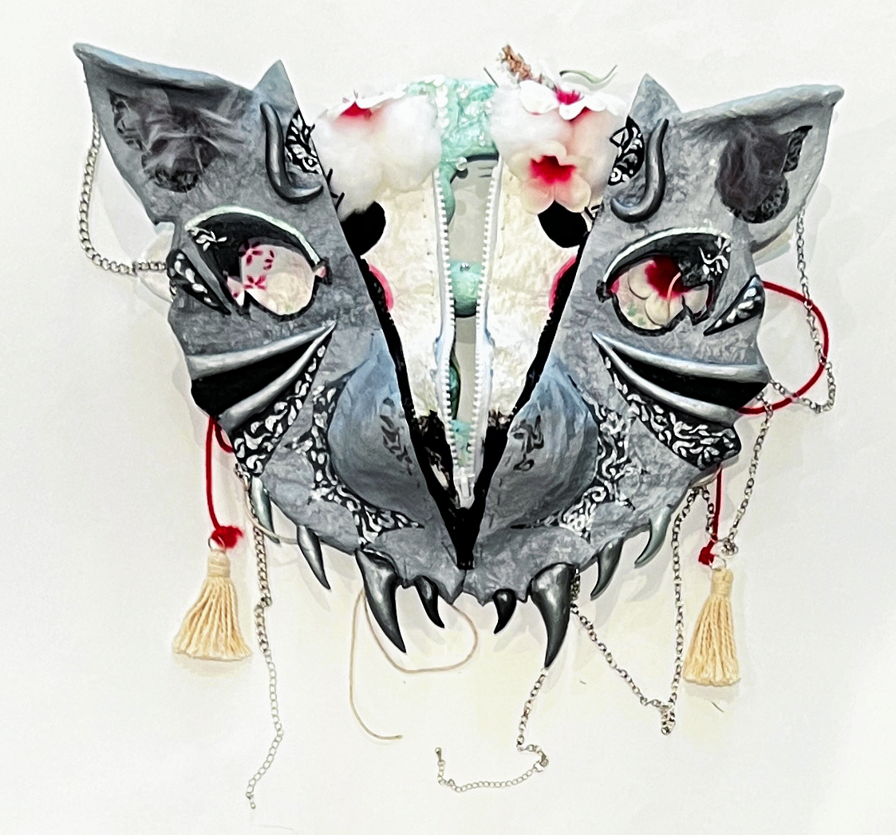

These masks were created for my partner during a studio class, with the aim of helping her overcome fears or difficulties.
My partner is a particularly cool Japanese girl. My first impression of her was very cool, both in terms of her clothing (black attire) and appearance (cold expression and guarded eyes). However, when I interacted with her and chatted together, I discovered that she is really sweet!
She mentioned that she often presents different versions of herself to different people, losing her true self in the process (something I can relate to as well, being familiar with people-pleasing tendencies). Therefore, I created three masks to help her rediscover herself.
The first mask, the Japanese wolf, represents her tendency to protect herself and become closed off when facing strangers (the impression I initially had of her). I used a gothic style and metallic elements to convey an icy and distant feeling.

The second mask, the sheep, symbolizes her excessive concern for others' opinions when dealing with friends and family, gradually neglecting her own thoughts. I incorporated many traditional Japanese elements into the mask (as her family is quite traditional), including elements from traditional Japanese masks and snacks.

The third mask, the moon, represents her true self. Since she loves mint green, I made it the primary color for this mask. I painted lilies on the mask, symbolizing rebirth.

I added zippers to the first and second masks, symbolizing the layers being peeled back to reveal her true self.
